Hauptkomponentenanalyse
Principal-Component-Analysis
Zusammenfassung
Die Hauptkomponentenanalyse eignet sich zum Reduzieren und Interpretieren von großen multivariaten Datensätzen mit zugrundeliegenden linearen Strukturen und zum Entdecken von unerwarteten Beziehungen.
Es wird von einem Datensatz ausgegangen, der den Eiweißverbrauch in 25 europäischen Ländern für neun Lebensmittelgruppen enthält. Mit Hilfe der Hauptkomponentenanalyse wird das Verhältnis zwischen Eiweißquellen und diesen europäischen Ländern untersucht.
Hauptmethoden auswählen
Um die Anzahl der zu verbleibenden Hauptkomponenten zu ermitteln, sollten Sie zuerst die Hauptkomponentenanalyse durchführen und dann auf Grundlage deren Ergebnisses fortfahren:
- Öffnen Sie ein neues Projekt oder eine neue Arbeitsmappe. Importieren Sie die Datendatei \samples\Statistics\Protein Consumption in Europe.dat
- Markieren Sie das gesamte Arbeitsblatt und wählen Sie dann Statistik: Multivariate Analyse: Hauptkomponentenanalyse.
- Akzeptieren Sie die Standardeinstellungen in dem geöffneten Dialog und klicken Sie auf OK
- Wählen Sie das Blatt PCA Report aus.
- In der Tabelle Eigenwerte der Korrelationsmatrix können Sie sehen, dass die ersten vier Hauptkomponenten 86% der Varianz erklären und die verbleibenden Komponenten jeweils 5% oder weniger beitragen. Wir behalten vier Hauptkomponenten.
- 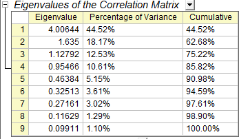
- Ein Scree-Diagramm kann als visuelles Hilfsmittel beim Bestimmen der geeigneten Anzahl von Hauptkomponenten nützlich sein. Die Anzahl der Komponenten richtet sich nach dem Punkt, an dem die verbleibenden Eigenwerte relativ klein und ungefähr alle gleich groß sind. Dieser Punkt ist nicht sehr offensichtlich im Scree-Diagramm, trotzdem kann gesagt werden, dass der vierte Punkt dieser besondere Punkt ist.
- 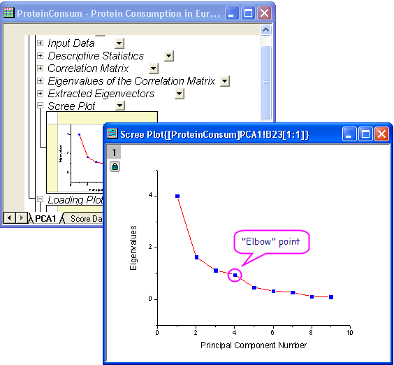
- Klicken Sie auf das Schlosssymbol
 im Ergebnisbaum und wählen Sie Parameter ändern im Kontextmenü. Setzen Sie auf der Registerkarte Einstellungen die Anzahl der zu extrahierenden Komponenten auf 4. Schließen Sie den Dialog nicht; in den nächsten Schritten erstellen Sie die Diagramme der Komponenten.
im Ergebnisbaum und wählen Sie Parameter ändern im Kontextmenü. Setzen Sie auf der Registerkarte Einstellungen die Anzahl der zu extrahierenden Komponenten auf 4. Schließen Sie den Dialog nicht; in den nächsten Schritten erstellen Sie die Diagramme der Komponenten.
- 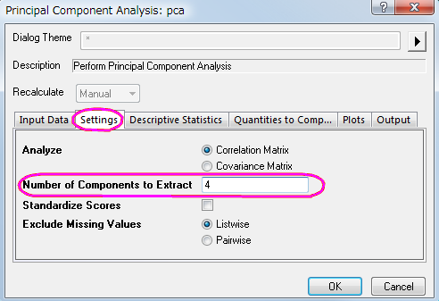
Abrufen von Hauptkomponentendiagrammen
Im Zweig Zeichnungen des Dialogs können Anwender wählen, ob sie ein Scree- oder ein Komponentendiagramm erstellen möchten.
-
Scree-Diagramm
- Das Scree-Diagramm ist eine nützliche visuelle Hilfe, um eine angemessene Anzahl von Hauptkomponenten zu bestimmen.
-
Komponentendiagramm
- Komponentendiagramme zeigen den Score der Komponenten jeder Beobachtung oder die Komponentenladung jeder Variable für ein Paar von Hauptkomponenten. In der Gruppe Hauptkomponenten zum Zeichnen auswählen können Anwender festlegen, welches Komponentenpaar gezeichnet werden soll. Die Komponentendiagramme umfassen:
-
Ladungsdiagramm
- Das Ladungsdiagramm ist eine Zeichnung der Beziehung zwischen den ursprünglichen Variablen und den Unterraumdimensionen. Es wird verwendet, um die Beziehungen zwischen den Variablen zu interpretieren.
-
Score-Diagramm
- Das Score-Diagramm ist eine Projektion von Daten auf den Unterraum. Es wird verwendet, um die Beziehungen zwischen den Beobachtungen zu interpretieren.
-
Biplot
- Der Biplot zeigt beide Ladungen und die Scores für beide ausgewählte Komponenten parallel.
- In dem Dialog, das in den vorherigen Schritten aufgerufen wurde, erweitern Sie den Zweig Zeichnungen. Stellen Sie sicher, dass Scree-Diagramm, Ladungsdiagramm und Biplot aktiviert sind.
- Die ersten beiden Komponenten sind normalerweise für den Großteil der Varianz verantwortlich. Deswegen zeichnen Sie das Komponentendiagramm im Raum der ersten beiden Hauptkomponenten. Setzen Sie in der Gruppe Hauptkomponenten zum Zeichnen auswählen die Hauptkomponente für X-Achse auf 1 und die Hauptkomponente für Y-Achse auf 2. Klicken Sie auf OK.
- 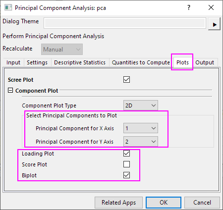
Ergebnisse interpretieren
- In der Korrelationsmatrix können Sie sehen, dass die Variablen stark korreliert sind. Viele Werte sind größer als 0,3. Mit der Hauptkomponentenanalyse können Sie die Kollinearität entfernen.
- 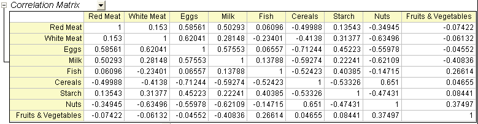
- Die Hauptkomponentenvariablen werden als lineare Kombinationen der ursprünglichen Variablen definiert. Die Tabelle Extrahierte Eigenwerte bietet Koeffizienten für Gleichungen.
- 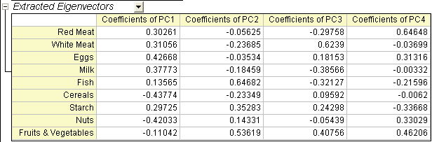
- 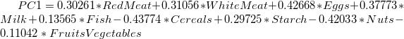
- 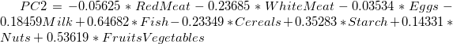
- 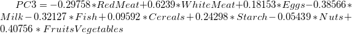
- 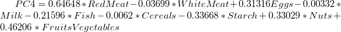
- Das Ladungsdiagramm macht die Beziehungen zwischen den Variablen im Raum der ersten beiden Komponenten deutlich. Im Ladungsdiagramm ist zu sehen, dass rotes Fleisch, Eier, Milch und weißes Mehl ähnlich starke Ladungen für Hauptkomponente 1 haben. Fisch, Obst und Gemüse haben dagegen eine ähnliche Ladung für Hauptkomponente 2.
- 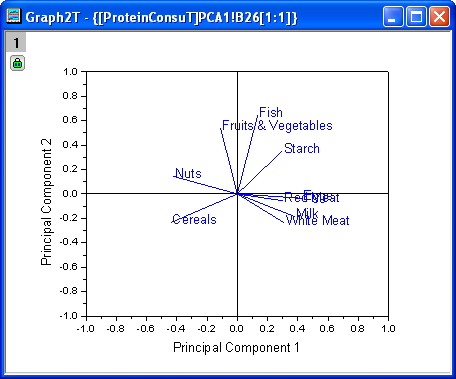
- Der Biplot zeigt beide Ladungen und die Scores für beide ausgewählte Komponenten parallel. Er kann die Projektion der Beobachtung auf den Unterraum mit den Scorepunkten aufzeigen Außerdem kann er das Verhältnis von Beobachtungen und Variablen im Unterraum der ersten beiden Komponenten darstellen. (Hinweis: Klicken Sie doppelt auf das Diagramm, um es zu öffnen und benutzerdefiniert anzupassen.)
- Verwenden Sie das Hilfsmittel Datenkoordinaten
 , um das Dateninfofenster zu öffnen und die Zeichnung in ihren Einzelheiten zu untersuchen. Klicken Sie auf einen Datenpunkt, um die Komponentenwerte für jedes Land abzulesen. Es ist zu erkennen, dass die Eiweißquellen von Spanien und Portugal sich von denen der anderen europäischen Länder unterscheiden. Spanien und Portugal greifen mehr auf Obst und Gemüse zurück, während osteuropäische Ländern wie Albanien, Bulgarien, Jugoslawien und Rumänien Getreideprodukte und Nüsse bevorzugen.
, um das Dateninfofenster zu öffnen und die Zeichnung in ihren Einzelheiten zu untersuchen. Klicken Sie auf einen Datenpunkt, um die Komponentenwerte für jedes Land abzulesen. Es ist zu erkennen, dass die Eiweißquellen von Spanien und Portugal sich von denen der anderen europäischen Länder unterscheiden. Spanien und Portugal greifen mehr auf Obst und Gemüse zurück, während osteuropäische Ländern wie Albanien, Bulgarien, Jugoslawien und Rumänien Getreideprodukte und Nüsse bevorzugen.
- 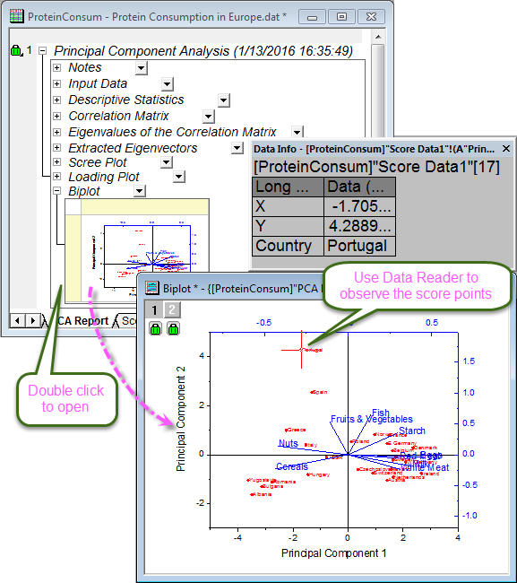
Um Länderinformationen im Fenster Daten Info, wie im Bild oben zu sehen, anzuzeigen,
- klicken Sie mit der rechten Maustaste in das Fenster Daten Info und wählen Einstellungen.
- Markieren Sie Country im linken Bedienfeld, klicken Sie dann auf die Schaltfläche Auswählen (der nach rechts weisende Pfeil), um das Land zur Anzeige der Dateninfos hinzuzufügen, und klicken Sie dann auf OK.
- 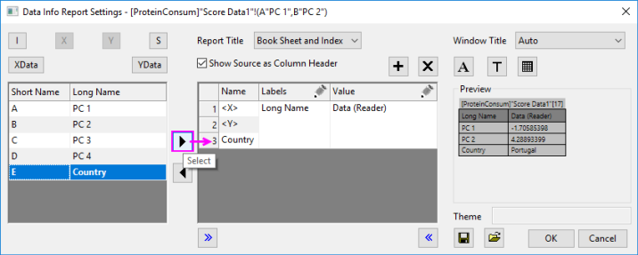
Hinweis: Seit Origin 2019 können Sie einfach mit dem Cursor über einen Datenpunkt fahren, um einen Tooltipp mit Informationen zu den Datenpunktkoordinaten anzuzeigen. Sowohl der Tooltipp als auch die Dateninfoanzeige sind benutzerdefiniert anpassbar. Siehe weitere Informationen zu Das Fenster Dateninfo und der Tooltipp der Datenpunkte.
|
3D-Komponentendiagramm erstellen
- Klicken Sie auf das Schlosssymbol im Ergebnisbaum und wählen Sie Parameter ändern im Kontextmenü.
- Setzen Sie auf der Registerkarte Diagramme den Komponentendiagrammtyp auf 3D. Geben Sie 4 im Feld Hauptkomponenten für Z-Achse ein.
- 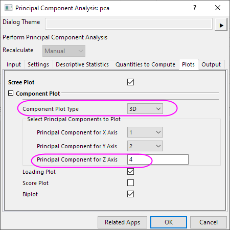
- Klicken Sie auf OK, um den Dialog zu schließen. Die Zeichnungsdaten der Hauptkomponentenanalyse und das 3D-Ladungsdiagramm werden, wie folgt, erstellt.
- 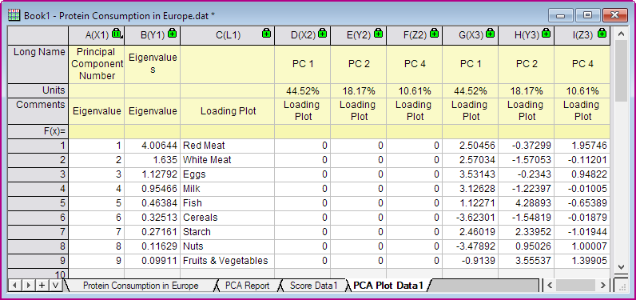
- 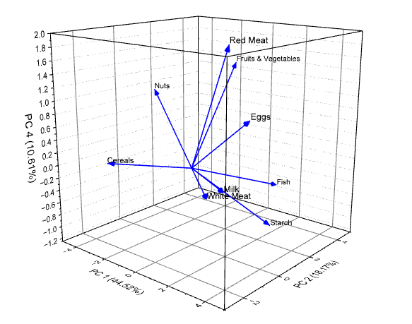